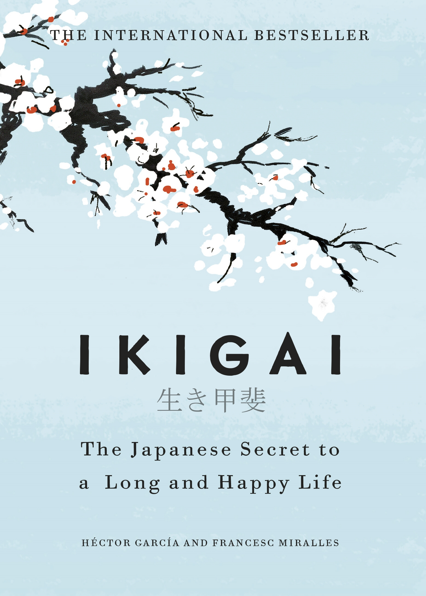

Republic of the Philippines
University of Cabuyao
(Pamantasan ng Cabuyao)
College of Computing Studies
Katapatan Mutual Homes, Brgy. Banay-banay, City of Cabuyao, Laguna, Philippines 4025
4 
IKIGAI: THE JAPANESE SECRET TO A LONG AND HAPPY LIFE
Ikigai is a Japanese concept that roughly translates to "a reason for being" or "a reason to wake up in the morning."
It encompasses finding joy, purpose, and fulfillment in life. The concept suggests that by identifying and nurturing
the intersection of four elements, individuals can lead a fulfilling and meaningful life. These elements are:
The idea behind ikigai is that true fulfillment and happiness come from finding balance and harmony among these four elements. It's about finding a purpose-driven life that integrates personal fulfillment with societal contribution and financial stability. By living in alignment with their ikigai, individuals can experience a sense of meaning, satisfaction, and longevity.